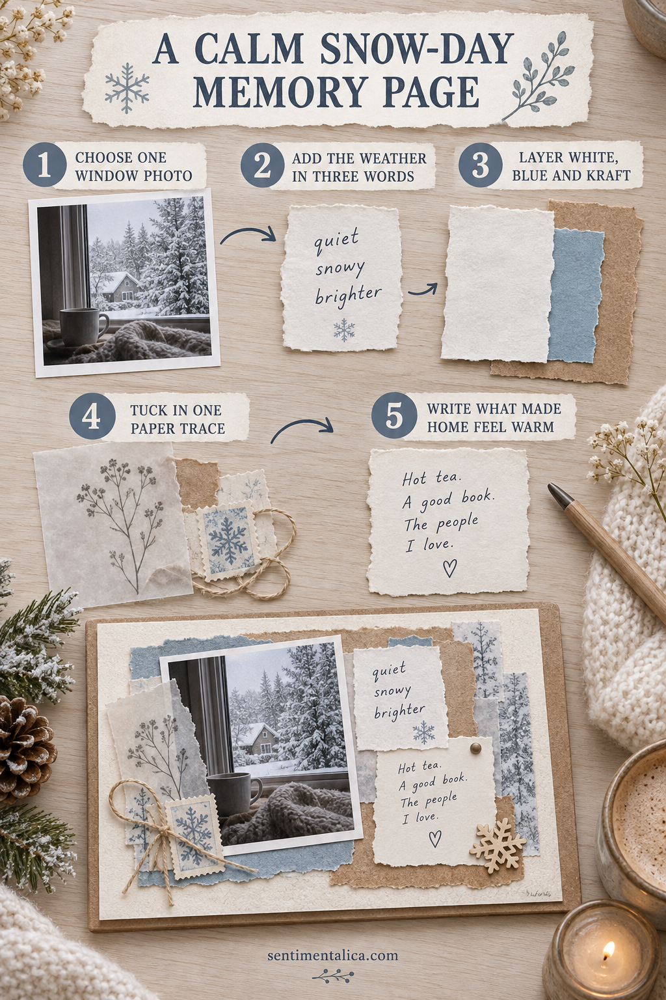

Make a calm snow-day memory page before the small details blur together. One photograph, one weather note, and a restrained set of winter textures can hold the whole day.

Choose one window photograph
Use one view that shows the weather and a little of the room. A mug edge, curtain, or windowsill helps the photograph feel personal instead of looking like a generic snow scene.
Describe the weather in three words
Choose words you actually felt: quiet, bright, wet, heavy, blue, or windblown. Write them on a small scrap rather than filling the page with a long weather report.
Build a restrained winter base
Layer warm white, one muted blue, and kraft or soft brown. The brown keeps the page from feeling cold, while the pale papers leave room for the photograph.
Add one trace from indoors
Use a tea wrapper, grocery label, child’s note, or small piece of the day’s mail. Flat paper is better than a bulky object and helps the page close.
Write what made home feel warm
Name the blanket, soup, phone call, music, or person that changed the day. A specific sentence gives the snow meaning.
Want a low-pressure page to practise with? Open the 100 free floral pictures, choose one image that matches your palette, and try the method before using a favorite original.
Let the page stay simple
Use a glue stick or a thin layer of paper adhesive, keep wet glue away from photographs, and allow folded pieces to dry before closing the journal. Flat paper traces are safer for the binding than thick natural objects or heavy charms.
When the page is finished, add the full date and one sentence only you could have written. That final detail turns a pretty arrangement into a memory.
Prepare a small, calming workspace
Clear only enough room for the open journal and one shallow tray. Put scissors, adhesive, pencil, and the chosen papers within reach, then move the larger supply boxes away. A limited workspace reduces repeated decisions and makes it easier to notice when the page is already complete.
If you feel rushed, do the construction first and the writing later. Keep the photograph or note in the unfinished pocket so nothing is lost. The page can wait until you have the quiet attention its story deserves. Close the supplies when you stop so returning feels easy.
Choose evidence that belongs to this snow day
Before adding decoration, name three things that could identify this particular day: the time the snow began, what was canceled, the view from one window, a meal you made, or a message someone sent. Choose one for the visible caption and place the others on the back of the photograph or inside a small fold.
If the photograph is mostly white, give it a narrow medium-dark mat so its edges remain visible. Avoid outlining every layer. One strong border, one soft texture, and one warm detail will create enough contrast while preserving the quiet winter atmosphere.